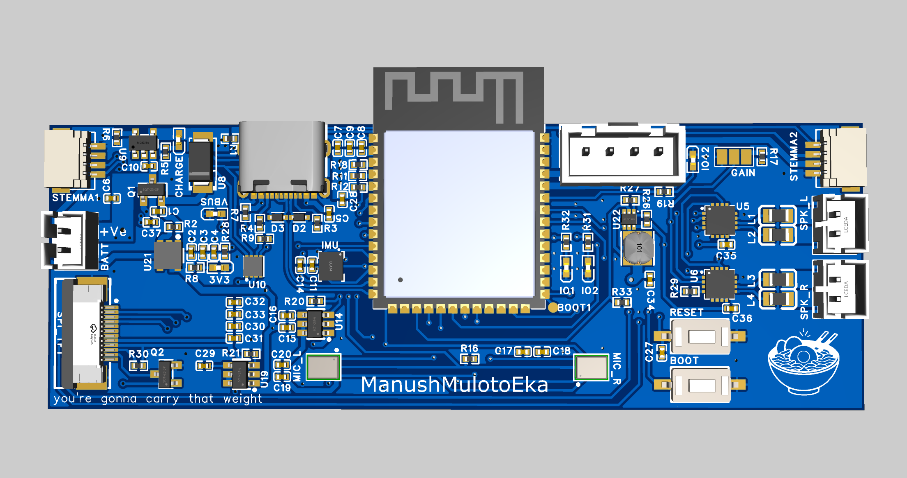
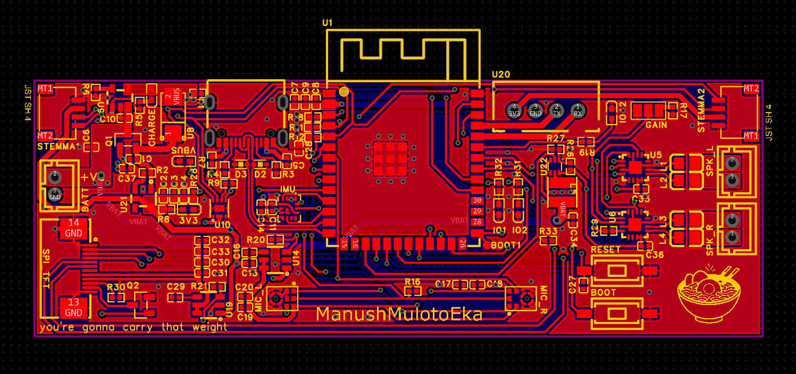

Custom ESP32-S3 hardware that listens, thinks with Claude AI, and speaks back — all over WiFi, on a battery, on a board you can hold in your hand.

You speak. The device streams raw PCM audio to a local Python server, which transcribes, thinks, synthesises, and sends audio back — all in under two seconds.
| Stage | Time |
|---|---|
| VAD silence detection | ~700 ms |
| faster-whisper STT (base.en, beam=1) | ~300 ms |
| Claude Sonnet time-to-first-token | ~500 ms |
| First TTS sentence | ~400 ms |
| Total to first audio | ~1.9 s |
LLM token generation and TTS synthesis run concurrently via an asyncio queue — sentence N+1 is synthesised while sentence N is playing.
Everything built into a single custom PCB.
Dual ICS-43434 with I²S output, power-gated via TPS22918 load switch. 30 dB digital gain applied in firmware.
MAX98357A × 2 for stereo output. No I²C configuration needed — direct I²S, 3 W per channel at 4 Ω.
Streaming Anthropic API — first token starts arriving before STT even finishes. Responses begin playing before the full reply is generated.
Single-cell LiPo with MCP73831T USB-C charging and MAX17048 fuel gauge for accurate state-of-charge reporting over I²C.
LSM6DSOXTR accelerometer + gyroscope with hardware gesture interrupts and an on-chip ML core for future wake-word or gesture detection.
Built-in HTTP server (port 80) served directly from the ESP32 — battery %, IMU readings, load switch states, WiFi RSSI, free heap. Updates every 3 seconds.
Vanilla JS monitor served by the Python server — streaming token display, pipeline state badge, transcript history. No framework dependencies.
ESP32-S3-WROOM-1 with OPI PSRAM — enough headroom for audio ring buffers, PSRAM-backed WAV capture, and future ML inference.
Key components on the v1.0 PCB.
| Subsystem | Part | Notes |
|---|---|---|
| MCU | ESP32-S3-WROOM-1 | 16 MB Flash · 8 MB OPI PSRAM · 240 MHz dual-core |
| Microphones | ICS-43434 × 2 | Stereo I²S · 24-bit · 65 dBA SNR · power-gated |
| Amplifiers | MAX98357A × 2 | Stereo Class-D · 3 W · direct I²S |
| Display | TFT (SPI) | PWM backlight · TPS22918 power gate |
| IMU | LSM6DSOXTR | 6-axis · I²C · HW interrupts · ML core |
| Fuel gauge | MAX17048 | LiPo SOC · I²C · low-battery alert pin |
| Charger | MCP73831T | Single-cell LiPo · USB-C input |
| Power gating | TPS22918 × 3 | Per-rail switches — mics, display, amps |

You need Python 3.9+, PlatformIO, and an Anthropic API key.
kokoro-onnx model files are not included in the repo (~170 MB). Download them into server/ once.
Create a Python venv and install requirements: python -m venv server/.venv then pip install -r server/requirements.txt. On Linux/Mac, make install does this for you.
Copy .env.example to .env and add your ANTHROPIC_API_KEY.
Copy wifi_config.h.example to wifi_config.h, fill in your WiFi credentials and server LAN IP, then run pio run -e voicebox -t upload.
Run server/.venv/bin/python server/main.py. Models prewarm at startup — takes ~5 seconds, then it's ready.
Navigate to http://localhost:8080. When the ESP32 connects, the badge switches to listening. Say something.